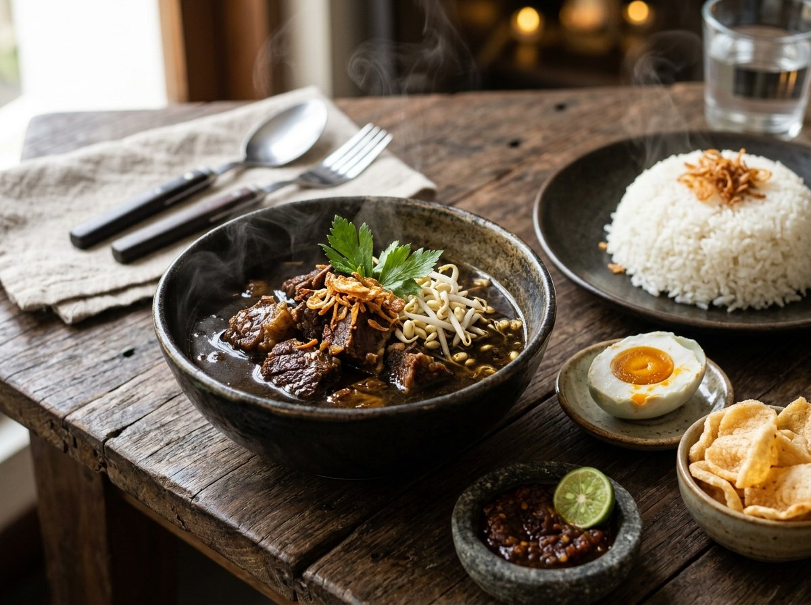
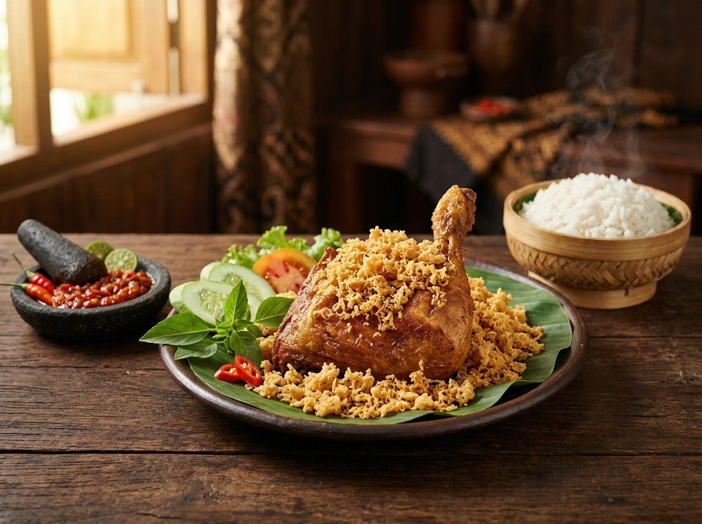
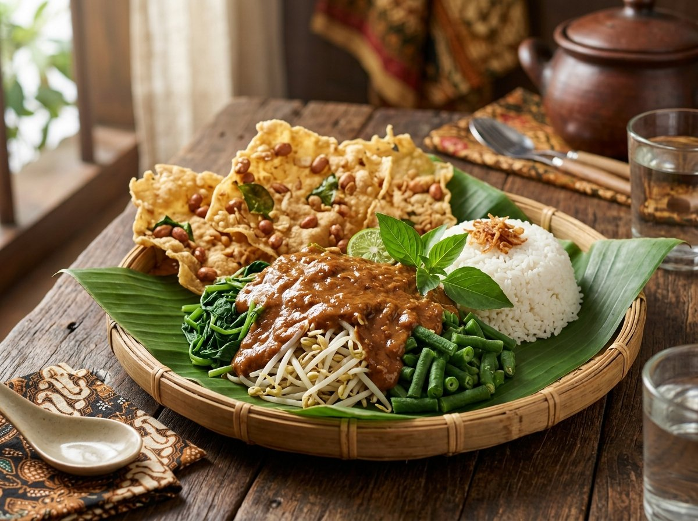
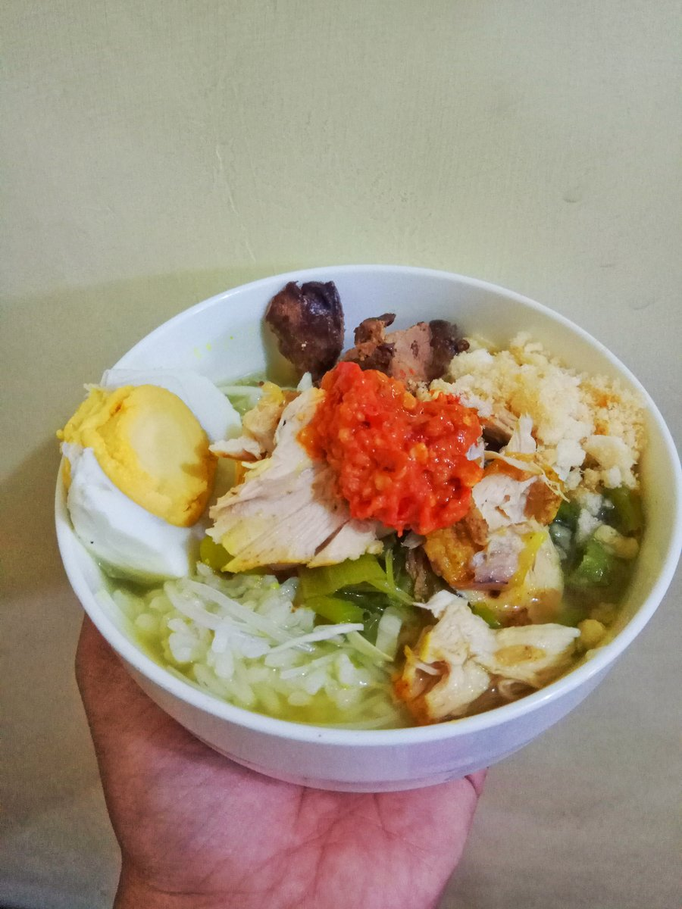
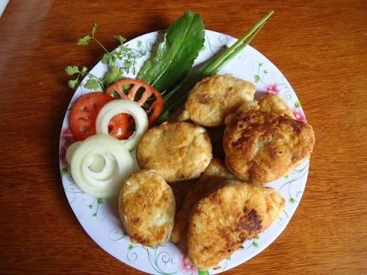
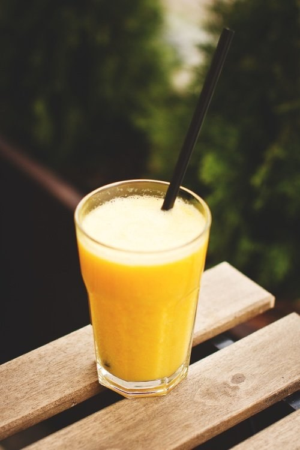

Menu Terlaris
Nasi Rawon Daging
Kuah kluwak pekat khas Jawa Timur dengan telur asin masir
Nasi pulen hangat, kuah kluwak rawon pekat berempah, dan sambal ulek terasi segar yang dibuat dadakan. Lauk dimasak baru setiap subuh dengan resep warisan keluarga sejak 1998.

Daging sapi empuk, kuah kluwak hitam pekat, tauge, telur asin & sambal
Lebih dari 25 tahun mempertahankan resep otentik tanpa mengurangi takaran bumbu rempah.
Semua menu diracik baru setiap pagi. Kami pantang menyajikan lauk simpanan atau kuah sisa kemarin.
Cabai rawit merah segar dan terasi bakar pilihan, diulek langsung di atas cobek batu saat Anda memesan.
Daging sapi segar direbus perlahan dengan rempah kluwak berjam-jam hingga seratnya empuk dan bumbu meresap ke dalam.
Porsi mantap khas masakan ibu di rumah. Nasi hangat pulen, lauk melimpah, harga bersahabat di dompet.
Potret hidangan lezat dan segar yang kami sajikan setiap hari di Warung Bu Ningsih.
Kuah kluwak pekat khas Jawa Timur dengan telur asin masir

Favorit PelangganAyam bumbu ungkep empuk dengan taburan kremesan bersarang

Segar & SehatSayuran rebus segar disiram bumbu kacang medok kental & peyek

Hangat & BerkuahKaldu ayam kampung kuning gurih dengan taburan koya gurih

Camilan KhasGorengan gurih renyah hangat disajikan dengan lalapan segar

Minuman SegarPerasan jeruk manis alami segar dengan es dingin pelepas dahaga
Kami mengutamakan kebersihan dan kenyamanan Anda saat bersantap bersama keluarga maupun rekan kerja.
Ruangan makan tertata rapi, bersih, dan sejuk untuk santap santai.
Tersedia tempat parkir aman untuk kendaraan motor maupun mobil.
Menerima QRIS (GoPay, OVO, Dana, BCA, Livin), transfer bank, serta tunai.
Bisa pesan langsung via WhatsApp atau kurir pesanan langganan kami.
Mampir untuk sarapan, makan siang, atau santap malam bersama keluarga.
Buka setiap hari melayani santap di tempat & bungkus
Mudah diakses di pusat kota dekat area perkantoran